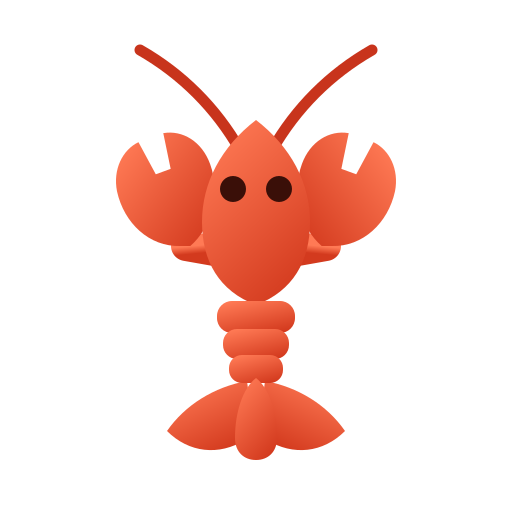
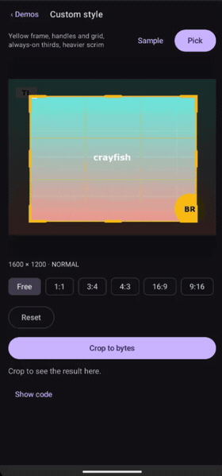
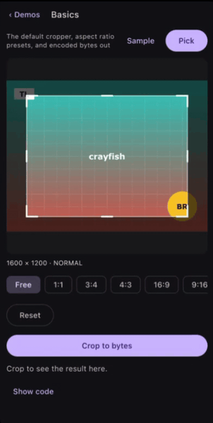
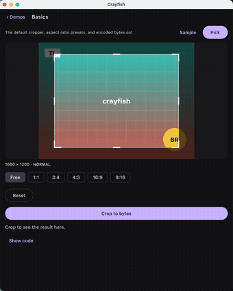

Crayfish


🦞 Crayfish is a Compose Multiplatform image cropper for Android, iOS, desktop, and the web. It crops a `Painter` and hands one back, so an image loaded from a URL goes straight into a crop and straight back into an `Image`. Give it a file or a Uri instead and it takes a reference rather than a decoded bitmap, so a 100 megapixel photo never has to fit in memory. The photo sits still the way an ordinary `Image` does and the crop rectangle is what moves, with pinch, pan and free angle rotation there to switch on when a screen wants them. It reads all eight Exif orientations, ships aspect ratio presets and grid overlays, and the crop rectangle is operable without dragging.



The same screen on Android, iOS and desktop. The videos those are made from are
in previews/ as .mov.
Download¶

Gradle¶
Add the dependency below to your module's build.gradle file:
dependencies {
implementation("com.github.skydoves:crayfish:0.1.0")
}
For Kotlin Multiplatform, add the dependency below to your module's build.gradle.kts file:
sourceSets {
val commonMain by getting {
dependencies {
implementation("com.github.skydoves:crayfish:$version")
}
}
}
Crayfish publishes android, desktop for the JVM, iosArm64, iosSimulatorArm64, macosArm64,
and wasmJs. It contains no native code, so there is nothing to align for the Play Store's 16 KB
page size requirement.
Usage¶
Crayfish gives you two layers. ImageCropper is a suspending call that shows a dialog and returns
the cropped bytes, and Cropper is the composable behind it for when the crop belongs inside a
screen you are designing yourself.
ImageCropper¶
rememberImageCropper gives you a cropper you can call from a coroutine. ImageCropperDialog
shows it whenever a crop is in progress, so the call site is a single when:
val cropper = rememberImageCropper()
val scope = rememberCoroutineScope()
var cropped by remember { mutableStateOf<ImageBitmap?>(null) }
Button(
onClick = {
scope.launch {
when (val result = cropper.cropToImage(source)) {
is CropImage.Success -> cropped = result.image
is CropImage.Cancelled -> Unit
is CropImage.Failure -> showError(result.reason)
}
}
},
) {
Text("Crop a photo")
}
ImageCropperDialog(cropper)
// The result is an ImageBitmap, so drawing it is the ordinary Image composable.
val image = cropped
if (image != null) {
Image(
bitmap = image,
contentDescription = "Cropped photo",
modifier = Modifier.size(120.dp).clip(CircleShape),
)
}
Nothing is encoded on that path, so what comes back goes straight into Image with no decode step
in between. CropImage.Success.painter is the same pixels for anything that takes a Painter.
crop returns encoded bytes instead, for an upload or a file:
when (val result = cropper.crop(CropSource.FilePath(path))) {
is CropResult.Success -> upload(result.bytes)
is CropResult.Cancelled -> Unit
is CropResult.Failure -> showError(result.reason)
}
crop suspends until the user confirms or cancels. Cancelling the calling coroutine dismisses the
dialog, so a screen that leaves composition takes its crop with it.
The dialog takes the same styling as Cropper, so an avatar crop stays a one liner:
ImageCropperDialog(
cropper = cropper,
shape = CropShape.Circle,
accessibility = CropAccessibility(contentDescription = "Profile photo crop area"),
)
CropSource¶
From a Painter, which is what a Compose app already has¶
Whatever put the picture on screen gave you a Painter or an ImageBitmap. Either is a crop
source, so a URL loaded by Coil, Landscapist or anything else needs nothing in between:
val painter = rememberAsyncImagePainter(url)
val source = rememberCropSource(painter, cacheKey = url)
if (source != null) {
val state = rememberCropState(source)
Cropper(state = state, modifier = Modifier.fillMaxSize())
}
rememberCropSource also takes an ImageBitmap directly. It returns null only when the painter
has no intrinsic size and none was given, since there is then no pixel grid to rasterise onto; pass
size = IntSize(w, h) for that case.
cacheKey identifies the image. Crayfish keys the saved crop state on it, so use a value that is
stable across process death, such as the URL or a content Uri, rather than an identity hash.
From a file, a Uri, or a network fetch¶
These are references rather than pixels. Crayfish opens them, reads the header, and decodes only the region the frame is over, so the image never has to fit in memory:
CropSource.FilePath("/storage/emulated/0/DCIM/Camera/IMG_0001.jpg")
CropSource.Bytes(bytes, cacheKey = uri.toString())
CropSource.Loader takes a suspending function and treats what comes back exactly like
CropSource.Bytes, region decoding and Exif included:
CropSource.Loader(cacheKey = url) { httpClient.get(url).readRawBytes() }
CropSource.Loader(cacheKey = uri.toString()) {
contentResolver.openInputStream(uri)?.use { it.readBytes() }
}
The function runs once, when the cropper opens the source, and returning null is how it reports
that the image could not be fetched. Crayfish carries no HTTP client of its own, which is what lets
it promise zero external dependencies and no native code, so the loader is where yours goes.
Which to use¶
| You have | Use | What it costs |
|---|---|---|
A Painter or ImageBitmap on screen |
rememberCropSource(painter, cacheKey) |
Nothing extra. Those pixels are already in memory |
| A camera original, a large photo, a Uri | CropSource.FilePath / CropSource.Bytes |
Nothing. Only the cropped region is ever decoded |
| A URL for an image that may be huge | CropSource.Loader with your HTTP client |
One fetch of the encoded bytes, never a full decode |
The painter route is the ergonomic one and the right default for images a screen is already showing. It is the one route that holds the whole image in memory, because it is handed pixels rather than a reference, so a 100 megapixel original belongs on one of the others.
Cropper¶
Cropper is the composable primitive. You own the surrounding screen and drive the same state from
your own controls:
val state = rememberCropState(
source = CropSource.FilePath(path),
initialAspectRatio = AspectRatio.Square,
)
Cropper(
state = state,
modifier = Modifier.fillMaxSize(),
)
The crop rectangle and the transform survive configuration change and process death. This matters
on Android 16, which ignores screenOrientation on any display 600dp or wider, so the portrait
lock that older croppers rely on no longer holds.
CropState¶
CropState exposes what the crop is doing and the operations a toolbar needs:
val state = rememberCropState(source = CropSource.FilePath(path))
when (val status = state.status) {
is CropStatus.Loading -> CircularProgressIndicator()
is CropStatus.Ready -> Text("${status.imageSize.width} x ${status.imageSize.height}")
is CropStatus.Failed -> Text("Could not open this image")
}
Row {
IconButton(onClick = { state.rotateBy(-90f) }) { Icon(Icons.Default.RotateLeft, null) }
IconButton(onClick = { state.toggleFlipHorizontal() }) { Icon(Icons.Default.Flip, null) }
IconButton(onClick = { state.reset() }) { Icon(Icons.Default.Refresh, null) }
}
rotateBy takes any angle, not just quarter turns, and it works whether or not the twist gesture
is enabled. rotateToNearestQuarterTurn snaps to the nearest of 0, 90, 180, and 270, which is what
a straighten control usually wants once a free angle has been dialled in. Every operation ends with
the crop rectangle back inside the image, so the frame always shows which pixels the crop will
select.
Rotating and flipping reach the output. After rotateBy(90f) the bytes come back turned, and after
a free angle they are the frame's own contents rather than the bounding box of the tilted frame. A
quarter turn is a permutation of the source pixels; a free angle is interpolated, which is what
rotating by an arbitrary angle costs. CropResult.Success.region stays an axis aligned rectangle of
the source, so under a free angle it describes where the bytes came from rather than their shape.
Getting the result¶
cropToImage gives you pixels, which is usually what a Compose app wants next:
when (val result = state.cropToImage()) {
is CropImage.Success -> Image(bitmap = result.image, contentDescription = null)
is CropImage.Cancelled -> Unit
is CropImage.Failure -> showError(result.reason)
}
CropImage.Success carries image for Image(bitmap = ...) and painter for
Image(painter = ...). Nothing is encoded on this path, so there are no EncodeOptions, alpha
survives, and it is the shorter route: going through bytes to reach something drawable would encode
the crop and decode it straight back.
crop gives you encoded bytes, for an upload, a file, or a content Uri:
val result = state.crop(EncodeOptions(format = EncodedFormat.PNG))
crop also takes a DecodeBudget, which caps what the decode is allowed to allocate. The default
is 192MiB, which is what makes a 200 megapixel source croppable at all. Lower it when the result is
going somewhere small:
val avatar = state.crop(
options = EncodeOptions(EncodedFormat.JPEG),
budget = DecodeBudget(maxByteCount = 8L * 1024 * 1024, maxDimension = 1024),
)
A crop that is rotated or mirrored is decoded against half the budget, because turning the pixels writes a second buffer while the first is still alive and the cap covers the pair. Such a crop comes back smaller than the same crop untransformed; raise the budget if the resolution matters more than the peak.
AspectRatio¶
Pass an AspectRatio to rememberCropState as the opening one, or assign state.aspectRatio
to reshape the crop rectangle in place:
val state = rememberCropState(source = source, initialAspectRatio = AspectRatio.Square)
Row {
listOf(
"Free" to AspectRatio.Free,
"1:1" to AspectRatio.Square,
"3:4" to AspectRatio.Portrait3x4,
"4:3" to AspectRatio.Landscape4x3,
"16:9" to AspectRatio.Widescreen16x9,
"9:16" to AspectRatio.Portrait9x16,
).forEach { (label, ratio) ->
FilterChip(
selected = state.aspectRatio == ratio,
onClick = { state.aspectRatio = ratio },
label = { Text(label) },
)
}
}
AspectRatio.Fixed(ratio) takes any width divided by height. Setting the ratio reshapes the
rectangle immediately rather than waiting for the next drag.
CropGestures¶
By default the image does not move. It is fitted like an ordinary Image and left there, and every
gesture belongs to the crop rectangle.
That is a deliberate reversal of what most croppers do. Letting the photo pan, zoom and twist under the frame is the richer model, but it takes away the reference frame: the picture drifts and rescales while you are trying to place an edge against it, and nothing on screen holds still long enough to aim at. A fitted photo makes what is inside the frame the continuous answer to "what will I get", which is the one question a crop screen is there to answer.
Nothing is given up for it. The frame is placed against the source's full extent either way, and the output is region decoded from the file rather than from the preview, so a fitted preview does not cap the resolution of the result.
Switch the gestures on per screen:
Cropper(
state = state,
modifier = Modifier.fillMaxSize(),
gestures = CropGestures.Zoomable,
)
CropGestures.Default is the fixed image. CropGestures.Zoomable adds pinch, two finger pan, a
double tap to zoom, and fling. CropGestures.All adds the two finger twist on top. The three flags
are independent, so CropGestures(zoom = true) is a photo you can zoom but not drag.
CropState.rotateBy is unaffected by any of this. A straighten control on your own toolbar keeps
working with the gestures off, which is usually where a rotation belongs.
CropRecipe¶
A crop written down as numbers, so it can be stored and edited again later.
// When the user is happy with it. Eleven floats, no pixels.
database.save(photoId, state.recipe.encodeToString())
// A week later, on the original file, exactly where they left off.
val recipe = CropRecipe.decodeFromString(database.load(photoId))
val state = rememberCropState(source, initialRecipe = recipe)
Every other cropper in this category hands back a bitmap and forgets. The crop becomes pixels, and "let me fix that crop from last week" means starting over. Crayfish never held the pixels, it held a reference and a rectangle over it, and a recipe is that rectangle made durable: the original is never rewritten, and a different recipe over the same source is a different crop with nothing lost between them.
decodeFromString returns null for anything it does not recognise, including a future version,
because opening a crop somewhere the user never put it is worse than opening on the default. A
broken transform is repaired instead of refused, since the rectangle is what they chose and the
transform is only how they were looking at it.
Process death uses the same eleven numbers, so there is one format rather than two that drift.
Straighten¶
rotateTo takes an absolute angle, which is what a slider reports:
var degrees by remember { mutableStateOf(0f) }
Slider(
value = degrees,
onValueChange = { degrees = it; state.rotateTo(it) },
valueRange = -45f..45f,
)
The crop rectangle stays where it is and the photo is zoomed the least amount that still fills it. That is the one place the frame does not yield: everywhere else it is the thing being dragged, but under a straighten slider it is the composition the user already chose, and shrinking it a little on every degree is a ratchet that never gives back what it took. Sliding out and back leaves the crop exactly where it started.
rotateBy is the same thing with the difference already added, for a quarter turn button.
CropStyle¶
CropStyle controls the chrome. Every value has a default, so override only what you need:
Cropper(
state = state,
modifier = Modifier.fillMaxSize(),
style = CropStyle(
scrimColor = Color.Black.copy(alpha = 0.7f),
frameColor = Color.White,
gridMode = CropGridMode.OnTouch,
handleTouchRadius = 24.dp,
),
)
CropGridMode is Never, Always, or OnTouch. handleTouchRadius is the touch target rather
than the drawn size, so the handles stay reachable without drawing them larger.
CropShape¶
The mask shape and the output aspect ratio are separate parameters. A circular mask does not force a square output, and a square ratio does not force a rectangular mask:
Cropper(
state = state,
modifier = Modifier.fillMaxSize(),
overlay = { cropState ->
CropOverlay(
state = cropState,
shape = CropShape.Circle,
)
},
)
CropShape is Rectangle, RoundedRectangle(cornerRadius), Circle, or Custom, which builds
a Path from the crop rectangle's width and height. ImageCropperDialog takes the same parameter,
so a circular avatar crop is one argument on the one line API too.
The shape is cut out of the result, not only drawn over the viewfinder. Setting it on the state drives both:
state.shape = CropShape.Circle
// Corners come back transparent.
val avatar = state.cropToImage()
cropToImage always cuts, because an ImageBitmap has an alpha channel. crop cuts only when the
encoded format has one, so PNG and WebP keep the transparency and JPEG is left rectangular rather
than flattened onto a colour nobody chose. CropShape.Custom is drawn but not cut: evaluating a
caller's own Path per output pixel is not something the pipeline does.
Exif orientation¶
Crayfish reads the Exif orientation from the source and applies it to both the preview and the output. All eight values are handled, including the four mirrored ones, which are the values that produce an upright but reversed photo when a cropper normalises only the rotations. For HEIF, Crayfish reconciles the container's own transform boxes against the Exif tag.
There is nothing to configure. The cropped bytes come back upright, and CropResult.Success.region
describes them in the same space as the rectangles you passed in.
Accessibility¶
WCAG 2.2 SC 2.5.7 makes drag only interaction a Level AA failure, and a crop rectangle you can only resize by dragging does not comply. Crayfish registers accessibility actions for moving the frame and each of its edges, keeps a live state description of where the frame sits, and accepts arrow keys and a D-pad.
You can replace the strings without touching anything else:
CropOverlay(
state = state,
accessibility = CropAccessibility(
step = 24.dp,
contentDescription = "Crop area",
label = { action -> localizedLabel(action) },
),
)
step is how far one action moves an edge, and label names each CropAccessibilityAction in the
assistive technology's menu.
Baseline profile¶
The Android artifact ships a baseline profile, so the decode, geometry and gesture paths are AOT compiled from the first launch of any app that depends on Crayfish. There is nothing to add and nothing to configure.
Measured on a Galaxy S23 running Android 16, five iterations per condition, the same build with the profile installed and without it:
| without profile | with profile | |
|---|---|---|
| Cold start to first frame, median | 312 ms | 262 ms |
| Frame duration while dragging the crop frame, P90 | 25.2 ms | 11.7 ms |
| Frame overrun while dragging the crop frame, P90 | 23.0 ms | 5.6 ms |
Frame overrun is how far past the frame deadline a frame landed, so the P90 moving from 23.0 ms to 5.6 ms is the difference between a drag that visibly stutters and one that does not.
Crayfish Activity¶

For apps that are not hosting Compose on the screen doing the cropping. Views, Fragments, or anything that would rather launch a cropper than embed one:
dependencies {
implementation("com.github.skydoves:crayfish-activity:$version")
}
Register the contract once, where the Activity or Fragment is constructed:
private val cropper = registerForActivityResult(CropImageContract()) { result ->
when (result) {
is CropImageResult.Success -> imageView.setImageURI(result.uri)
is CropImageResult.Cancelled -> Unit
is CropImageResult.Failure -> showError(result.reason)
}
}
Then launch it whenever there is something to crop:
cropper.launch(CropImageRequest(source = photoUri, aspectRatio = 1f, mask = CropMask.Circle))
Nothing to declare. The activity and a FileProvider are in the library's own manifest, and the
provider's authority is namespaced under your applicationId so two apps on one device cannot
collide.
Why it returns a Uri and not the bytes¶
Because bytes do not fit. An Activity result crosses a binder transaction, and that has a hard
ceiling. Measured on a device rather than quoted: 768 KB went through, 1 MB came back as
FAILED BINDER TRANSACTION. A JPEG crop of an ordinary phone photo is bigger than that, a PNG one
much bigger, and the size is yours to choose, so an API that returned bytes would pass every test and
crash on somebody's holiday photo.
So the crop is written to your app's own cache and handed back as a content:// Uri with read
permission already attached. If you did want the bytes, read them in process, where the size stops
being a question:
val bytes = result.readBytes(context)
val bitmap = result.readBitmap(context)
The file lives in cacheDir and the next crop clears the one before it. Copy it somewhere of your
own if it has to outlive the screen.
What the request can carry¶
An Intent carries primitives, so CropImageRequest does too: a ratio as a Float?, a CropMask
enum instead of CropShape, a corner radius in dp. CropShape.Custom builds a Path from a lambda
and cannot cross a process boundary, which is the one thing this route gives up against the Compose
API.
Crayfish Coil¶

The crayfish-coil module applies a stored crop while Coil loads
the original, so showing a crop needs no second file and no second decode:
dependencies {
implementation("com.github.skydoves:crayfish-coil:$version")
}
val region = result.region
val request = remember(region) {
ImageRequest.Builder(context)
.data(url)
.transformations(CropTransformation(region))
.build()
}
AsyncImage(model = request, contentDescription = null)
The transformation's cacheKey includes the region, so two crops of one image are two cache entries
rather than one that changes under whichever screen asks second. A region it cannot apply leaves the
picture alone rather than failing the load.
Pairs with CropRecipe: keep the original, store the recipe, and let the loader apply the rectangle
every time it draws.
Crayfish Landscapist¶

The crayfish-landscapist module applies a crop to an image
Landscapist has already loaded, so you can show a crop
result without encoding and reloading it:
dependencies {
implementation("com.github.skydoves:crayfish-landscapist:$version")
}
CropTransformation is a Landscapist Transformation, so it goes on the request. Its cache key
includes the region, so two crops of the same image do not collide:
val region = result.region
val requestBuilder = remember(region) {
{ addTransformation(CropTransformation(region)) }
}
LandscapistImage(
imageModel = { url },
requestBuilder = requestBuilder,
)
Remember the builder rather than writing it inline, or the request changes identity every frame and the image reloads.
Find this repository useful? :heart:¶
Support it by joining stargazers for this repository. :star:
Also, follow me on GitHub for my next creations! 🤩
License¶
Designed and developed by 2026 skydoves (Jaewoong Eum)
Licensed under the Apache License, Version 2.0 (the "License");
you may not use this file except in compliance with the License.
You may obtain a copy of the License at
http://www.apache.org/licenses/LICENSE-2.0
Unless required by applicable law or agreed to in writing, software
distributed under the License is distributed on an "AS IS" BASIS,
WITHOUT WARRANTIES OR CONDITIONS OF ANY KIND, either express or implied.
See the License for the specific language governing permissions and
limitations under the License.